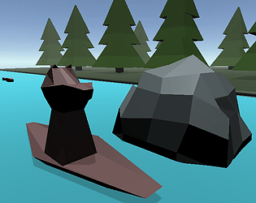

You can play the game in browser here.
I made this game in July 2020 for the GMTK Game Jam 2020, where the theme was Out Of Control.
The point of the game was that the bear was loose in a kayak, and you control the river current left or right to try and make it avoid the rocks while catching the fish.
This was supposed to be a duo project with a developer who had experience in game development, but unfortunately that game jam weekend, he suddenly became unavailable, and while he did help me think through a couple of things in the beginning, this was essentially a solo project, since I created all the assets (except the music) and all the code for the game.
This was also my first foray into Unity, the first real game engine I was using. In 2020, Unity was still THE go-to engine for anyone doing video game development as a hobby, and there was (and still is) a TON of tutorials online helping you play with it.
I had a lot of fun doing this game, learning both Unity and Blender. I'm not particularly proud of the end product, but it was an extremely good learning experience.